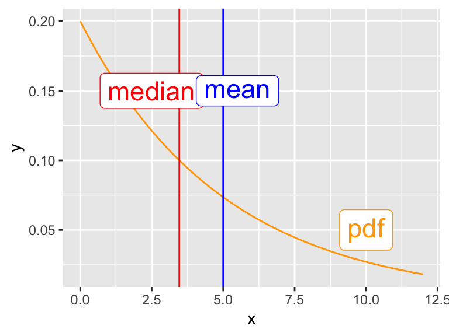
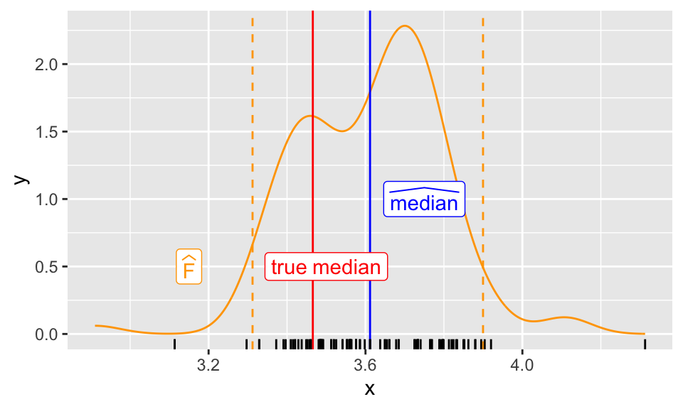

Explain the bootstrap procedure and its purpose in estimating confidence intervals
Identify when the bootstrap is more/less advantageous than analytic methods of uncertainty quantification
Articulate the assumptions underpinning the bootstrap and its limits as an approximation
Implement the bootstrap for any statistical algorithm in pseudocode
Differentiate between different bootstrap intervals and identify the “correct” one
Motivation
We spent much of the first half of the course on linear models, in part due to their ubiquity but also due to our ability to analyze them statistically.
In STAT 306, you derived analytic confidence intervals for linear models as a way to quantify uncertainty in our parameter estimates/the true responses due to limited data.
In this course, we probably demonstrated that methods like ridge regularization reduce variance.
Moreover, we rigorously argued that methods like basis expansions reduce bias.
However, these methods for uncertaity quantification, variance reduction, and bias reduction all relied on linear structure. Other predictive/statistical models do not have such convenient analytic properties.
In this module, we will replace mathematical analysis with computational simulation to achieve similar goals.
In this lecture, we will introduce the bootstrap, a computational method for estimating predictive uncertainty in arbitrary predictive models (with almost no assumptions about the statistical or predictive model)!
In the following lectures, we will introduce ensemble methods as generic tools to either provably reduce variance (bagging, random forests) or reduce bias (boosting).
Uncertainty Quantification
In STAT 306, you produced confidence intervals for the regression function \(\mathbb E[Y \mid X=x]\) of a (fixed) test covariate \(x\) under the assumptions of a linear statistical model:
These confidence intervals tell us that, under our linearity assumptions, the regression function evaluated at \(x\) (i.e. \(\mathbb E[Y\mid X=x]\) will fall within the interval with 95% probability.
NoteWhat does “95% Probability” Mean?
We assume that our training data are random samples with \(Y = X^\top \beta + \epsilon\), where \(\epsilon \sim \mathcal{N}(0, \sigma^2)\), for some fixed \(\beta, \sigma\).
95% probability refers to the randomness in the training data.
If we repeatedly sampled new training datasets, trained linear models on them, and computed 95% confidence intervals for predictions at \(x\), then 95% of those confidence intervals would contain \(\mathbb E[Y \mid X=x]\).
We derive these confidence intervals analytically using our statistical model, properties of our OLS estimator:
and by using the fact that \(\hat \beta_\mathrm{OLS} \mid \boldsymbol X\) is Gaussian under our statistical model.
However, consider what happens if we use a predictive model that’s based on a more complicated (or implicit) statistical model, like a decision tree or k-nearest neighbors.
We haven’t necessarily defined the conditional distribution of \(Y \mid X\).
Even if we did, the recursive decision tree algorithm is too complicated to compute expectations/variances of the estimator analytically.
Simulation-Based Statistics
The key idea in this lecture (and module) is to use brute-force computation when closed-form math becomes too difficult.
Imagine that we want to construct a confidence interval around the regression function \(\mathbb E[Y\mid X=x]\) for some (fixed) test covariates \(x\) based on our prediction \(\hat Y = \hat f_{\mathcal D}(x)\)
As always, \(\hat f_{\mathcal D}\) is a predictive model trained on dataset \(\mathcal D\).
TipWhy do we Care About Confidence Intervals for Predictions?
Intuitively, these confidence interval should reflect how much \(\hat Y\) would change if we had a different training dataset \(\mathcal D'\).
If the confidence interval is narrow, then \(95\%\) of all training samples would lead to similar predictions at \(x\), giving us confidence that this prediction is likely accurate.
Conversely, if the confidence interval is wide, then we know that the prediction is highly sensitive to the training data, and we should be less confident in its accuracy.
In order to compute a confidence interval for \(Y\) based on the central limit theorem, we need to estimate \(\mathrm{Var}[ \hat Y \mid X=x ] = \mathrm{Var}[ \hat f_{\mathcal D}(x) ]\)
If we had access to \(100\) different training samples, we could train \(100\) different models \(\hat f_{\mathcal D^{(1)}}, \ldots, \hat f_{\mathcal D^{(100)}}\), compute their predictions at \(x\), and estimate this variance empirically.
However, we only have access to one training dataset \(\mathcal D\). We thus need a way to simulate different training datasets \(\mathcal D^{(1)}, \ldots, \mathcal D^{(100)}\) using only the data in \(\mathcal D\).
This idea of (1) simulating new datasets and (2) using those datasets to estimate uncertainty is the core idea behind simulation-based statistics. We use computation to approximate mathematical expectations/variances that we cannot compute analytically.
Approximating New Datasets via the Bootstrap
Imagine that I have \(X_1, \ldots, X_n\) drawn i.i.d. from some distribution \(P(X)\).
The empirical distribution\(\hat P(X)\) is the discrete distribution that places mass \(1/n\) at each observed data point \(X_i\):
where \(\delta_{X_i}(x)\) is a point mass at \(X_i\).
If \(n\) is large enough, then \(\hat P(X) \approx P(X)\):
Code
set.seed(1)n <-100x <-rnorm(n)hist(x, probability =TRUE, breaks =10, main ="Empirical Distribution vs True Distribution")curve(dnorm(x), col ="red", add =TRUE, lwd =2)legend("topright", legend =c("True Distribution", "Empirical Distribution"), col =c("red", "black"), lwd =2)
Empirical distribution approximating true distribution
NoteWhat is the Implication of \(\hat P(X) \approx P(X)\)?
Let’s imagine I sample a new point \(X^*\) from \(P(X)\), and another point \(\hat X^{*}\) from \(\hat P(X)\).
If \(\hat P(X) \approx P(X)\), then the distribution of \(X^*\) and \(\hat X^{*}\) should be similar.
Thus, sampling from the empirical distribution \(\hat P(X)\) is (approximately) equivalent to sampling from the true distribution \(P(X)\)!
If we wish to sample a whole-new dataset \(\mathcal D' = \{ X_1', \ldots, X_n' \}\) that has (approximately) the same distribution as our original dataset \(\mathcal D = \{ X_1, \ldots, X_n \}\), we can thus sample each \(X_i'\) i.i.d. from the empirical distribution \(\hat P(X)\).
The Bootstrap
This idea gives us a recipe to sample many datasets \(\mathcal D^{(1)}, \ldots, \mathcal D^{(B)}\) that are (approximately) drawn from the same distribution as our original dataset \(\mathcal D\), which is often referred to as the bootstrap:
TipThe Bootstrap
Construct the empirical distribution \(\hat P(X, Y)\) based on the observed data points \((X_i, Y_i)\) in \(\mathcal D\).
For \(b = 1, \ldots, B\):
Sample \(n\) data points \((X_i^{(b)}, Y_i^{(b)})\)with replacement from \(\hat P(X, Y)\) to form dataset \(\mathcal D^{(b)}\).
Compute the statistic of interest (e.g. prediction \(\hat f_{\mathcal D^{(b)}}(x)\)) on dataset \(\mathcal D^{(b)}\). (Important: this step will require training \(b\) models on the \(b\) simulated datasets if the statistic of interest is a model prediction.)
Compute the empirical variance \(\mathrm{Var}[ \hat f_{\mathcal D^{(b)}}(x) ]\), or construct a confidence interval from the \(B\) computed statistics (using methods to be explained shortly).
Note that we sample with replacement from the empirical distribution because we want each data point in the new dataset to be an independent draw from \(\hat P(X, Y) \approx P(X, Y)\).
Once we have sampled these new datasets, we can train models \(\hat f_{\mathcal D^{(1)}}, \ldots, \hat f_{\mathcal D^{(B)}}\) on each dataset and use the predictions at \(x\) to estimate the variance of \(\hat Y = \hat f_{\mathcal D}(x)\).
Amazingly, this simple procedure can be used to estimate the variance of the predictions from any model, or just about any statistic that we could ever care about! We don’t need to derive complicated analytic expressions, nor do we even need to make any (significant) assumptions about the statistical model underlying our data!
WarningThe Catch
The Fundamental Premise (TM) of the Bootstrap is that a sufficiently large sample looks like the population, so that sampling from the sample looks like sampling from the population.
If \(\mathcal D\) is too small or not representative of the true data distribution, then the bootstrap will not yield datasets that approximate the true data distribution well, resulting in poor confidence intervals.
Example
TipA (Non-Predictive) Example
While we motivated the bootstrap as a way to obtain confidence intervals around the regression function \(\mathbb E[Y\mid X=x]\) in learning problems, it’s really a general way to form confidence intervals around any statistical quantity.
Here we will walk through a non-predictive example, since you will look at a predictive example for homework!
Imagine that we have \(X_1, \ldots, X_n\) drawn i.i.d. from \(\mathrm{Exponential}(1/5)\) with pdf \(f(x) = \frac{1}{5}e^{-x/5}\).
Imagine I want to estimate a confidence interval for the sample mean \(\bar X\).
The CLT (if \(n\) is sufficiently large) gives \[
\frac{\sqrt{n}(\bar X - \mathbb E[X])}{{\mathrm{se}}} \approx \mathcal{N}(0, 1),
\] where \(\mathrm{se}\) is the standard error of the sample mean, giving us a 95% confidence interval \[
\bar X \pm 2 \hat{\mathrm{se}}/\sqrt{n}.
\]
However, what if we wanted to estimate a confidence interval for the sample median instead?
NoteVisualizing the Population Distribution
The median is different from the mean for the exponential distribution:
Code
library(tidyverse)ggplot(data.frame(x =c(0, 12)), aes(x)) +stat_function(fun =function(x) dexp(x, 1/5), color ="orange") +geom_vline(xintercept =5, color ="blue") +# meangeom_vline(xintercept =qexp(.5, 1/5), color ="red") +# medianannotate("label",x =c(2.5, 5.5, 10), y =c(.15, .15, .05),label =c("median", "mean", "pdf"), parse =TRUE,color =c("red", "blue", "orange"), size =6 )

We can use the bootstrap along with the pivotal interval to construct a confidence interval for the sample median!
Assume I have some dataset \(\mathcal D = \{ X_1, \ldots, X_n \}\) of size \(n=500\) drawn i.i.d. from \(\mathrm{Exponential}(1/5)\).
set.seed(406406406)n <-500x <-rexp(n, 1/5)
First I will draw \(100\)bootstrap samples\(\mathcal D^{(1)}, \ldots, \mathcal D^{(100)}\) by sampling \(n\) points with replacement from my original dataset \(\mathcal D\).
Then I will compute a 95% confidence interval for the sample median using the bootstrap sample medians (using a CI formula that we are about to discuss):
alpha <-0.05med <-median(x) # Sample median# Use the pivotal confidence interval formula for CICI <-2* med -quantile(median_bootstrap, probs =c(1- alpha /2, alpha /2))
The plot below shows the distribution of the bootstrap sample medians:
Code
ggplot(data.frame(median_bootstrap), aes(median_bootstrap)) +geom_density(color ="orange") +geom_vline(xintercept = CI, color ="orange", linetype =2) +geom_vline(xintercept = med, col ="blue") +geom_vline(xintercept =qexp(.5, 1/5), col ="red") +annotate("label",x =c(3.15, 3.5, 3.75), y =c(.5, .5, 1),color =c("orange", "red", "blue"),label =c("widehat(F)", "true~median", "widehat(median)"),parse =TRUE ) +xlab("x") +geom_rug(aes(2* med - median_bootstrap))

The blue line is the sample median.
The orange dashed lines are the bounds of our 95% confidence interval.
The rug plot at the bottom shows the distribution of the bootstrap medians reflected around the sample median.
This confidence interval is quite good because it contains the true median (the red line) and is fairly tight around the sample median!
From Bootstrap Samples to Confidence Intervals
Recall that we want to generate a confidence interval for our regression function \(\mathbb E[Y \mid X=x]\) based on our prediction \(\hat Y = \hat f_{\mathcal D}(x)\) and bootstrapped predictions \(\hat Y^{(1)} = \hat f_{\mathcal D^{(1)}}(x), \ldots, \hat Y^{(B)} = \hat f_{\mathcal D^{(B)}}(x)\).
There are two primary techniques used to construct confidence intervals from bootstrap samples.
The Percentile Interval
The percentile interval is given by the empirical quantiles of the bootstrap sample statistics:
where \(\hat Y^{(b)}_q\) is the \(q\) quantile of \(\hat Y^{(b)}\).
We teach this one in DSCI100 because it’s easy and “looks right”, but it’s not theoretically justified in general. It does have the right coverage (asymptotically) in some specific cases.
WarningWhat does the Percentile Interval Measure?
Recall that the bootstrap gives us many samples of \(\hat Y\) from (approximate/Bootstrap) training samples.
The percentile interval constructs an (approximate) \(95\%\) confidence interval of \(\hat Y\); i.e., \(95\%\) of models trained on different training samples would (approximately) produce predictions within this interval.
However, this is not the same as a \(95\%\) confidence interval for the true response \(Y \mid X=x\)!
Thus, the percentile interval may not have the correct coverage for the true response!
When is the Percentile Interval Valid?
If there exists a monotonic function \(m: \mathbb R \to \mathbb R\) so that \(m(\hat Y)\) is Gaussian distributed, i.e. \(m(\hat Y) \sim N(m(\hat Y), c^2)\), then the percentile interval has asymptotically correct coverage.
For most complicated statistics (e.g. the predictions of a decision tree), it’s hard to know whether such a function \(m\) exists.
If we want (asymptotically) correct confidence intervals around the true regression function, we should use the pivotal interval.
The Pivotal Interval
The pivotal interval is given by
\[
[2\hat Y - \hat Y^{(b)}_{1-\alpha/2},\ 2\hat Y - \hat Y^{(b)}_{\alpha/2}]
\]
where again \(\hat Y\) is the statistic computed on the original dataset, and \(\hat Y^{(b)}_q\) is the \(q\) quantile of the bootstrap sample statistics.
This interval is justified under fairly general conditions, and thus is the preferred method for constructing bootstrap confidence intervals of the true regression function \(Y \mid X=x\)
There are many other bootstrap confidence intervals (e.g. the bias-corrected and accelerated (BCa) interval), but they are more complicated to compute and don’t have significant advantages over the pivotal interval in most cases.
At the very least, you should definitely NOT use the “normal” confidence interval \([\hat{Y} - z_{1-\alpha/2}\hat{\mathrm{se}}, \:\: \hat{Y} + z_{1-\alpha/2}\hat{\mathrm{se}}]\), which is only likely to work if \(\hat Y\) is approximately Gaussian.
Sources of Error, and Improving the Bootstrap
The bootstrap is, at the end of the day, just an approximation. There are two sources of error that could make our variance estimates or confidence intervals incorrect:
TipSources of Error in the Bootstrap
Statistical error from using only \(n\) data points to estimate the true data distribution. We don’t have the whole population so we make an error by using a sample. (Note: this part is what always happens with data, and what the science of statistics analyzes.)
Simulation error from using only \(B\) samples to estimate \(\mathrm{Var}[\hat Y]\).
Correcting for Statistical Error
We can used more advanced methods to alleviate the statistical error from using only \(n\) data points.
For example, the parametric bootstrap assumes some assumptions about the data-generating distribution (e.g. \(\hat Y\) is Gaussian) to improve the quality of the bootstrap samples.
However, if you make incorrect assumptions about the data distribution, you may make things worse!
Correcting for Simulation Error
This one’s easier, at least in theory!
You can always use more Bootstrap samples \(B\) to reduce simulation error.
In practice, start with \(B=100\) or \(B=1000\) samples and compute your variance/confidence intervals. Then try adding \(100\) more samples. If your confidence intervals change significantly, keep adding more samples until they stabilize.
TipMore is Better
“Just add more samples” will be a common refrain throughout this module.
In simulation-based statistics, or when using any computational black-box methods, accuracy will almost always improve if you throw more compute at the problem (i.e. more samples, more models, etc.)
In practice, you will have a limited amount of computing power, but we’ve essentially removed one design decision: use as much computing power as you have available to get the best results.
Summary
Simulation-based statistics uses computation to approximate mathematical expectations/variances that we cannot compute analytically.
The bootstrap is a general-purpose method for estimating variances/confidence intervals based on simulating new datasets from the empirical distribution of the observed data.
The bootstrap can be used to estimate uncertainty for almost any statistic, including predictions from arbitrary predictive models.
The bootstrap will only work if our empirical data distribution is large enough to approximate the true population.
The pivotal interval is the preferred method for constructing bootstrap confidence intervals for true responses.
In the homework, you’ll apply the bootstrap to compute uncertainty estimates of machine learning models. In the next lecture, we’ll show how this bootstrap principle can be applied to make predictions more accurate!